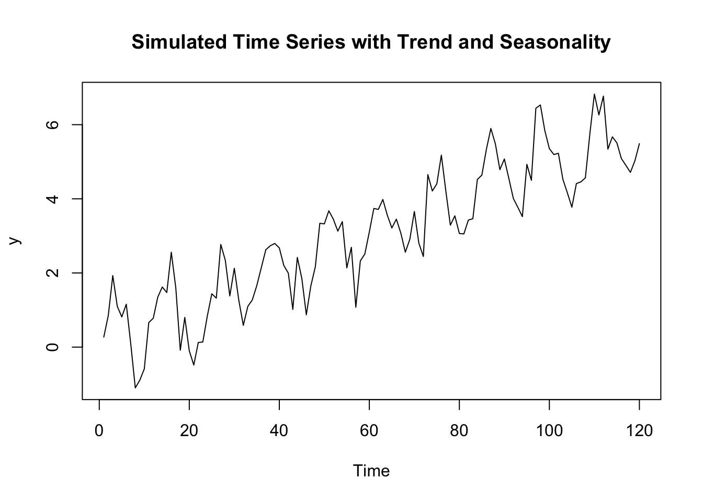
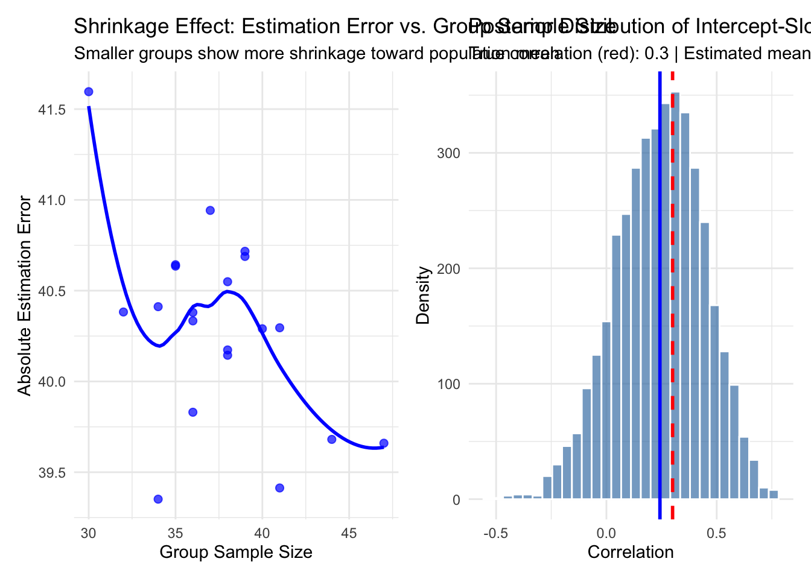

Chapter 12 Bayesian Exponential Smoothing and Holt-Winters Models in Stan and RStan
Time series data often reflect patterns of level, trend, and seasonality. While ARIMA-style models are foundational, exponential smoothing techniques are especially appealing when forecasting with recent observations is more informative than distant ones. In this post, we explore how to model these systems in a Bayesian framework using Stan and RStan, bringing full probabilistic inference and uncertainty quantification to these well-known methods.
We walk through the following:
Bayesian Simple Exponential Smoothing (SES)
Bayesian Holt-Winters Models
- Without seasonality (trend only)
- With seasonality (additive seasonal component)
12.1 Bayesian Simple Exponential Smoothing (SES)
Simple Exponential Smoothing assumes a local level that evolves recursively:
\[ \ell_t = \alpha y_{t-1} + (1 - \alpha) \ell_{t-1} \\ y_t \sim \mathcal{N}(\ell_t, \sigma^2) \]
To simulate a series under this model:
library(ggplot2)
set.seed(1)
n <- 100
alpha <- 0.3
sigma <- 1
l <- numeric(n)
y <- numeric(n)
l[1] <- 10
y[1] <- l[1] + rnorm(1, 0, sigma)
for (t in 2:n) {
l[t] <- alpha * y[t - 1] + (1 - alpha) * l[t - 1]
y[t] <- l[t] + rnorm(1, 0, sigma)
}
ts.plot(y, main = "Simulated SES Time Series")
12.1.3 Visualization
post <- extract(fit)
l_hat <- apply(post$l, 2, mean)
l_ci_lower <- apply(post$l, 2, quantile, 0.025)
l_ci_upper <- apply(post$l, 2, quantile, 0.975)
df <- data.frame(
time = 1:n, observed = y, true_level = l,
posterior_mean = l_hat, lower_95 = l_ci_lower, upper_95 = l_ci_upper
)
ggplot(df, aes(x = time)) +
geom_line(aes(y = observed), linetype = "dashed", color = "black") +
geom_line(aes(y = true_level), color = "blue", alpha = 0.5) +
geom_line(aes(y = posterior_mean), color = "red") +
geom_ribbon(aes(ymin = lower_95, ymax = upper_95), fill = "red", alpha = 0.2) +
labs(title = "Bayesian SES: Posterior Level Estimates vs True Level", y = "Value") +
theme_minimal()12.2 Bayesian Holt-Winters Models
12.2.1 Without Seasonality (Additive Trend)
Holt’s method models both level and trend:
\[ \begin{aligned} \ell_t &= \alpha y_{t-1} + (1 - \alpha)(\ell_{t-1} + b_{t-1}) \\ b_t &= \beta(\ell_t - \ell_{t-1}) + (1 - \beta)b_{t-1} \\ y_t &\sim \mathcal{N}(\ell_t + b_t, \sigma^2) \end{aligned} \]
set.seed(2)
n <- 100
alpha <- 0.3
beta <- 0.1
sigma <- 1
l <- numeric(n)
b <- numeric(n)
y <- numeric(n)
l[1] <- 5
b[1] <- 0.5
y[1] <- l[1] + b[1] + rnorm(1, 0, sigma)
for (t in 2:n) {
l[t] <- alpha * y[t - 1] + (1 - alpha) * (l[t - 1] + b[t - 1])
b[t] <- beta * (l[t] - l[t - 1]) + (1 - beta) * b[t - 1]
y[t] <- l[t] + b[t] + rnorm(1, 0, sigma)
}
ts.plot(y, main = "Simulated Holt-Winters Time Series")12.2.2 Stan Model
data {
int<lower=2> N;
vector[N] y;
}
parameters {
real<lower=0, upper=1> alpha;
real<lower=0, upper=1> beta;
real<lower=0> sigma;
vector[N] l;
vector[N] b;
}
model {
l[1] ~ normal(y[1], sigma);
b[1] ~ normal(0, sigma);
for (t in 2:N) {
l[t] ~ normal(alpha * y[t-1] + (1 - alpha) * (l[t-1] + b[t-1]), sigma);
b[t] ~ normal(beta * (l[t] - l[t-1]) + (1 - beta) * b[t-1], sigma);
}
y ~ normal(l + b, sigma);
}12.2.3 Visualization
post <- extract(fit)
l_hat <- apply(post$l, 2, mean)
b_hat <- apply(post$b, 2, mean)
y_hat <- l_hat + b_hat
l_ci_lower <- apply(post$l, 2, quantile, 0.025)
l_ci_upper <- apply(post$l, 2, quantile, 0.975)
df <- data.frame(
time = 1:n, observed = y,
predicted = y_hat, level_mean = l_hat,
level_lower = l_ci_lower, level_upper = l_ci_upper
)
ggplot(df, aes(x = time)) +
geom_line(aes(y = observed), linetype = "dashed", color = "black") +
geom_line(aes(y = predicted), color = "red") +
geom_ribbon(aes(ymin = level_lower, ymax = level_upper), fill = "red", alpha = 0.2) +
labs(title = "Bayesian Holt-Winters: Posterior Level & Trend Estimates", y = "Value") +
theme_minimal()12.2.4 With Seasonality (Additive Seasonal Component)
The full Holt-Winters seasonal model captures all three components:
\[ \begin{aligned} \ell_t &= \alpha(y_{t-1} - s_{t-m}) + (1 - \alpha)(\ell_{t-1} + b_{t-1}) \\ b_t &= \beta(\ell_t - \ell_{t-1}) + (1 - \beta)b_{t-1} \\ s_t &= \gamma(y_{t-1} - \ell_{t-1} - b_{t-1}) + (1 - \gamma)s_{t-m} \\ y_t &\sim \mathcal{N}(\ell_t + b_t + s_{t-m}, \sigma^2) \end{aligned} \]
set.seed(3)
n <- 120
m <- 12
alpha <- 0.3; beta <- 0.1; gamma <- 0.2; sigma <- 1
l <- numeric(n); b <- numeric(n); s <- numeric(n); y <- numeric(n)
l[1] <- 10; b[1] <- 0.5; s[1:m] <- sin(2 * pi * (1:m) / m)
y[1] <- l[1] + b[1] + s[1] + rnorm(1, 0, sigma)
for (t in 2:n) {
if (t > m) {
l[t] <- alpha * (y[t - 1] - s[t - m]) + (1 - alpha) * (l[t - 1] + b[t - 1])
b[t] <- beta * (l[t] - l[t - 1]) + (1 - beta) * b[t - 1]
s[t] <- gamma * (y[t - 1] - l[t - 1] - b[t - 1]) + (1 - gamma) * s[t - m]
} else {
l[t] <- l[t - 1]; b[t] <- b[t - 1]; s[t] <- s[t - 1]
}
y[t] <- l[t] + b[t] + s[t %% m + 1] + rnorm(1, 0, sigma)
}
ts.plot(y, main = "Simulated Seasonal Holt-Winters Time Series")
### Stan Model (Additive Seasonal)
stan_model_3='data {
int<lower=2> N; // number of observations
int<lower=1> m; // seasonal period
vector[N] y;
}
parameters {
real<lower=0, upper=1> alpha;
real<lower=0, upper=1> beta;
real<lower=0, upper=1> gamma;
real<lower=0> sigma;
vector[N] l; // level
vector[N] b; // trend
vector[N] s; // seasonal
}
model {
l[1] ~ normal(y[1], sigma);
b[1] ~ normal(0, sigma);
for (i in 1:m)
s[i] ~ normal(0, 1);
for (t in 2:N) {
if (t > m) {
l[t] ~ normal(alpha * (y[t - 1] - s[t - m]) + (1 - alpha) * (l[t - 1] + b[t - 1]), sigma);
b[t] ~ normal(beta * (l[t] - l[t - 1]) + (1 - beta) * b[t - 1], sigma);
s[t] ~ normal(gamma * (y[t - 1] - l[t - 1] - b[t - 1]) + (1 - gamma) * s[t - m], sigma);
} else {
l[t] ~ normal(l[t - 1], 1);
b[t] ~ normal(b[t - 1], 1);
s[t] ~ normal(s[t - 1], 1);
}
}
for (t in 1:N) {
if (t > m)
y[t] ~ normal(l[t] + b[t] + s[t - m], sigma);
else
y[t] ~ normal(l[t] + b[t] + s[t], sigma);
}
}'12.2.5 Fit
library(rstan)
data_list <- list(N = length(y), y = y, m = m)
fit <- stan(model_code = stan_model_3, data = data_list,
chains = 4, iter = 2000, warmup = 1000)##
## SAMPLING FOR MODEL 'anon_model' NOW (CHAIN 1).
## Chain 1:
## Chain 1: Gradient evaluation took 0.000109 seconds
## Chain 1: 1000 transitions using 10 leapfrog steps per transition would take 1.09 seconds.
## Chain 1: Adjust your expectations accordingly!
## Chain 1:
## Chain 1:
## Chain 1: Iteration: 1 / 2000 [ 0%] (Warmup)
## Chain 1: Iteration: 200 / 2000 [ 10%] (Warmup)
## Chain 1: Iteration: 400 / 2000 [ 20%] (Warmup)
## Chain 1: Iteration: 600 / 2000 [ 30%] (Warmup)
## Chain 1: Iteration: 800 / 2000 [ 40%] (Warmup)
## Chain 1: Iteration: 1000 / 2000 [ 50%] (Warmup)
## Chain 1: Iteration: 1001 / 2000 [ 50%] (Sampling)
## Chain 1: Iteration: 1200 / 2000 [ 60%] (Sampling)
## Chain 1: Iteration: 1400 / 2000 [ 70%] (Sampling)
## Chain 1: Iteration: 1600 / 2000 [ 80%] (Sampling)
## Chain 1: Iteration: 1800 / 2000 [ 90%] (Sampling)
## Chain 1: Iteration: 2000 / 2000 [100%] (Sampling)
## Chain 1:
## Chain 1: Elapsed Time: 6.736 seconds (Warm-up)
## Chain 1: 4.422 seconds (Sampling)
## Chain 1: 11.158 seconds (Total)
## Chain 1:
##
## SAMPLING FOR MODEL 'anon_model' NOW (CHAIN 2).
## Chain 2:
## Chain 2: Gradient evaluation took 5.9e-05 seconds
## Chain 2: 1000 transitions using 10 leapfrog steps per transition would take 0.59 seconds.
## Chain 2: Adjust your expectations accordingly!
## Chain 2:
## Chain 2:
## Chain 2: Iteration: 1 / 2000 [ 0%] (Warmup)
## Chain 2: Iteration: 200 / 2000 [ 10%] (Warmup)
## Chain 2: Iteration: 400 / 2000 [ 20%] (Warmup)
## Chain 2: Iteration: 600 / 2000 [ 30%] (Warmup)
## Chain 2: Iteration: 800 / 2000 [ 40%] (Warmup)
## Chain 2: Iteration: 1000 / 2000 [ 50%] (Warmup)
## Chain 2: Iteration: 1001 / 2000 [ 50%] (Sampling)
## Chain 2: Iteration: 1200 / 2000 [ 60%] (Sampling)
## Chain 2: Iteration: 1400 / 2000 [ 70%] (Sampling)
## Chain 2: Iteration: 1600 / 2000 [ 80%] (Sampling)
## Chain 2: Iteration: 1800 / 2000 [ 90%] (Sampling)
## Chain 2: Iteration: 2000 / 2000 [100%] (Sampling)
## Chain 2:
## Chain 2: Elapsed Time: 8.013 seconds (Warm-up)
## Chain 2: 4.431 seconds (Sampling)
## Chain 2: 12.444 seconds (Total)
## Chain 2:
##
## SAMPLING FOR MODEL 'anon_model' NOW (CHAIN 3).
## Chain 3:
## Chain 3: Gradient evaluation took 6.5e-05 seconds
## Chain 3: 1000 transitions using 10 leapfrog steps per transition would take 0.65 seconds.
## Chain 3: Adjust your expectations accordingly!
## Chain 3:
## Chain 3:
## Chain 3: Iteration: 1 / 2000 [ 0%] (Warmup)
## Chain 3: Iteration: 200 / 2000 [ 10%] (Warmup)
## Chain 3: Iteration: 400 / 2000 [ 20%] (Warmup)
## Chain 3: Iteration: 600 / 2000 [ 30%] (Warmup)
## Chain 3: Iteration: 800 / 2000 [ 40%] (Warmup)
## Chain 3: Iteration: 1000 / 2000 [ 50%] (Warmup)
## Chain 3: Iteration: 1001 / 2000 [ 50%] (Sampling)
## Chain 3: Iteration: 1200 / 2000 [ 60%] (Sampling)
## Chain 3: Iteration: 1400 / 2000 [ 70%] (Sampling)
## Chain 3: Iteration: 1600 / 2000 [ 80%] (Sampling)
## Chain 3: Iteration: 1800 / 2000 [ 90%] (Sampling)
## Chain 3: Iteration: 2000 / 2000 [100%] (Sampling)
## Chain 3:
## Chain 3: Elapsed Time: 7.743 seconds (Warm-up)
## Chain 3: 5.718 seconds (Sampling)
## Chain 3: 13.461 seconds (Total)
## Chain 3:
##
## SAMPLING FOR MODEL 'anon_model' NOW (CHAIN 4).
## Chain 4:
## Chain 4: Gradient evaluation took 7.6e-05 seconds
## Chain 4: 1000 transitions using 10 leapfrog steps per transition would take 0.76 seconds.
## Chain 4: Adjust your expectations accordingly!
## Chain 4:
## Chain 4:
## Chain 4: Iteration: 1 / 2000 [ 0%] (Warmup)
## Chain 4: Iteration: 200 / 2000 [ 10%] (Warmup)
## Chain 4: Iteration: 400 / 2000 [ 20%] (Warmup)
## Chain 4: Iteration: 600 / 2000 [ 30%] (Warmup)
## Chain 4: Iteration: 800 / 2000 [ 40%] (Warmup)
## Chain 4: Iteration: 1000 / 2000 [ 50%] (Warmup)
## Chain 4: Iteration: 1001 / 2000 [ 50%] (Sampling)
## Chain 4: Iteration: 1200 / 2000 [ 60%] (Sampling)
## Chain 4: Iteration: 1400 / 2000 [ 70%] (Sampling)
## Chain 4: Iteration: 1600 / 2000 [ 80%] (Sampling)
## Chain 4: Iteration: 1800 / 2000 [ 90%] (Sampling)
## Chain 4: Iteration: 2000 / 2000 [100%] (Sampling)
## Chain 4:
## Chain 4: Elapsed Time: 8.11 seconds (Warm-up)
## Chain 4: 4.805 seconds (Sampling)
## Chain 4: 12.915 seconds (Total)
## Chain 4:## Warning: There were 4 chains where the estimated Bayesian Fraction of Missing Information was low. See
## https://mc-stan.org/misc/warnings.html#bfmi-low## Warning: Examine the pairs() plot to diagnose sampling problems## Warning: Bulk Effective Samples Size (ESS) is too low, indicating posterior means and medians may be unreliable.
## Running the chains for more iterations may help. See
## https://mc-stan.org/misc/warnings.html#bulk-ess## Warning: Tail Effective Samples Size (ESS) is too low, indicating posterior variances and tail quantiles may be unreliable.
## Running the chains for more iterations may help. See
## https://mc-stan.org/misc/warnings.html#tail-ess## Inference for Stan model: anon_model.
## 4 chains, each with iter=2000; warmup=1000; thin=1;
## post-warmup draws per chain=1000, total post-warmup draws=4000.
##
## mean se_mean sd 2.5% 25% 50% 75% 97.5% n_eff Rhat
## alpha 0.13 0.01 0.12 0.00 0.04 0.10 0.20 0.44 274 1
## beta 0.25 0.01 0.19 0.01 0.10 0.20 0.35 0.72 845 1
## gamma 0.39 0.00 0.10 0.21 0.33 0.39 0.46 0.59 1943 1
## sigma 0.39 0.00 0.04 0.33 0.36 0.39 0.42 0.50 214 1
##
## Samples were drawn using NUTS(diag_e) at Fri Nov 7 10:31:52 2025.
## For each parameter, n_eff is a crude measure of effective sample size,
## and Rhat is the potential scale reduction factor on split chains (at
## convergence, Rhat=1).12.2.6 Visualization
post <- extract(fit)
l_hat <- apply(post$l, 2, mean)
l_ci_lower <- apply(post$l, 2, quantile, 0.025)
l_ci_upper <- apply(post$l, 2, quantile, 0.975)
df <- data.frame(
time = 1:n,
observed = y,
level_mean = l_hat,
level_lower = l_ci_lower,
level_upper = l_ci_upper
)
ggplot(df, aes(x = time)) +
geom_line(aes(y = observed), linetype = "dashed", color = "black") +
geom_line(aes(y = level_mean), color = "red") +
geom_ribbon(aes(ymin = level_lower, ymax = level_upper), fill = "red", alpha = 0.2) +
labs(title = "Bayesian Seasonal Holt-Winters: Posterior Level Estimates", y = "Value") +
theme_minimal()
12.3 Conclusion
Bayesian formulations of Exponential Smoothing and Holt-Winters models offer elegant alternatives to frequentist smoothing, with the advantage of posterior inference, natural handling of uncertainty, and full probabilistic forecasting. Using Stan via RStan, we can model level, trend, and seasonality in a transparent and interpretable way—crucial for applications in forecasting and planning. These methods can be extended further to include hierarchical structure, time-varying parameters, or non-Gaussian errors for more complex real-world tasks.